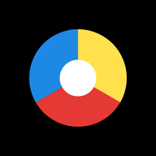
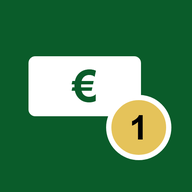

Trois outils simples pour le quotidien
Ils sont gratuits. Il n'y a pas de compte, pas de publicité. Ils marchent sans connexion.

TeinteDit la couleur d'un objet et la lumière. Pour les personnes aveugles et malvoyantes.- Pas à pasUne activité, une étape à la fois, avec des images et une voix.

Je paieAide à payer en euros et à vérifier la monnaie.
Pour installer un outil sur le téléphone : ouvrez-le, puis choisissez « Ajouter à l'écran d'accueil » dans le menu du navigateur.
Nederlands en English: open een app en druk op de knop FR.